以四篇中途之家深度訪談為證據,建立五位領養者 Persona,
對「安心託付 × 共同陪伴」認養網站執行兩輪
測試 → 假設 → 優化迴圈。
本次測試不從介面直覺出發,而是從四位中途之家經營者親口描述的認養人真實行為反推。 他們是每天面對認養人的人,他們看過的流失,就是網站要防的流失。
以 Playwright 開啟真實 Chromium,依五位 Persona 的實際點擊路徑逐頁操作,
擷取他們在每個決策點真正看得到的文字,再對照訪談證據逐條檢核。
測試腳本保留於 adoption-website/ux-test/,可重複執行。
為了產生 before / after 對照,將優化前的版本(commit 2bc54d9)以 git worktree
另行建置並掛在獨立連接埠,與優化後版本並行截圖,確保兩張圖是同一位置、同一視窗尺寸的實際畫面。
| 發現 | 訪談原文(節錄) | 對網站的意涵 |
|---|---|---|
| 表單即流失 | 「我 po 送養文就會把 Google 表單放在裡面,但我發現大家點進去表單,看到那一堆問題的時候,就不會有人填了」 另一位:「問卷一出去人就不見了」 |
12 題測驗有同樣風險,長度本身就是最大流失點。 |
| 追蹤=電子腳鐐 | 「幸福回報⋯我覺得它有點像電子腳鐐⋯這個或多或少都會讓一些認養的人不舒服,甚至非常明顯的抗拒,但我們沒辦法說抗拒這樣事情的人就是壞人,他很有可能只是非常在意自己的隱私而已」 | 不主動解除監視感,等於默認被監視。 |
| 系統催 ≠ 人催 | 「系統來提醒你,不是人來提醒你」 「我送養 100 隻貓,一個月要回報一次,我哪會記得」 |
自動化同時解決中途負擔與認養人壓迫感。 |
| 雙方對立 | 「越來越多的人不喜歡到中途之家去認養貓,他覺得說要被檢查很多東西」 「認養人跟送養人的對立跟衝突越來越明顯⋯他們有沒有被妖魔化」 |
網站要求中途透明,卻沒讓認養人理解中途——雙向透明只做了一半。 |
| 卡點在第三方 | 「同住家人一定要同意,因為曾經碰過小孩想認養,可是後來父母不同意」 「他的房東有沒有同意讓他養貓」 |
卡住的常不是認養人,是他說服不了的人。 |
| 外型決定送出 | 「橘白貓是最搶手⋯玳瑁真的不太好送,因為顏色花花的不討喜」 「奶貓潮⋯量變大了,所以你的貓會變得比較送不出去」 |
只按適配分排序,久候者依然沉底。 |
訪談同時確認了原設計中四項判斷是對的,這些不需要改,但值得記錄為已驗證的設計決策:
「我們家訪的目的是,協助你做的防護是不是很安全穩固⋯如果他那邊做得不好的話,我們就請他加強,我們會教他怎麼做。」 — 個人中途(雙北)。網站將「家訪」改稱「居家安全確認與改善協助」,與這位中途的實務定義完全一致。
「我並不會試著把牠寫得很可憐⋯我會把牠敘述成是一個人⋯而當這樣的文出去的時候,會有部分跟這些文字共鳴的人會來認養⋯ 退養或是說放棄照顧這隻貓的可能性小很多。」 — 大型協會負責人。支持「不賣慘、不商品化」的動物敘事原則。
「我問職業的時候我都不會去問收入,因為有些人雖然沒什麼錢但是他很用心⋯有些人他很有錢,但是他可能不願意花一兩百塊在貓上面。」 — 社團管理員。支持「不以收入、職業、有無房產單一判斷」的測驗設計。
「與其讓這一個人把這隻貓退回來⋯倒不如我們現在投入時間人力物資,去協助他們一起跨越那個困難,讓他繼續留下這隻貓。」 — 大型協會負責人。支持「90 天支持勝過嚴格審核」的核心論證。
| Persona | 訪談出處 | 初始領養意願 | 最脆弱環節 |
|---|---|---|---|
| P1 小昀 25 歲・租屋新手 | 「看到那一堆問題就不會有人填了」 | 高,但脆弱 | 測驗長度 |
| P2 阿哲 32 歲・工程師,常出差 | 「電子腳鐐」「只是非常在意自己的隱私」 | 中高 | 追蹤與家訪 |
| P3 宜庭 28 歲・被故事打動 | 「有部分跟這些文字共鳴的人會來認養」 | 極高(可能衝動) | 期待落差 |
| P4 至凱 38 歲・已婚有幼兒 | 「小孩想認養,可是後來父母不同意」 | 中 | 說服家人 |
| P5 Wendy 30 歲・曾被拒過 | 「認養人都說送養人是很機車的」 | 低 | 對中途的戒心 |
測驗 12 題每一題都附有「為什麼要問這題」(0 題遺漏)、結果頁有「不是人格評分」聲明、 動物頁有「可能不適合」與每月支出、成對認養有社會化理由與雙倍成本揭露、危機頁七情境齊備、 行動版底部導覽完整、全站零 JavaScript 錯誤。
| 假設 | 內容 | 崩落 Persona | 實測證據 |
|---|---|---|---|
| H1 | 中途無回饋的長表單會流失 | P1(第 6–8 題放棄) | 訪談 1、3 直證 |
| H2 | 未主動解除監視感 = 默認被監視 | P2 | 90 天頁沒有「系統提醒不是人催」、沒有說明誰看得到回報 |
| H3 | 否定句仍會觸發防禦 | P4、P5 | 結果頁字面出現「不合格」三字 |
| H4 | 單向透明加深對立 | P5(全程戒心未解) | 信任頁沒有任何中途自身處境揭露 |
| H5 | 第三方卡點無工具可用 | P4 | 流程頁沒有說服家人/房東的內容 |
| H6 | 心動當下看不到校準 | P3(衝動預約) | 期待校準題藏在 CTA 之後,首屏不可見 |
| H7 | 頁面缺主標題 | 全部 | 7 個頁面 H1 為 0(Section 全用 h2) |
即使是「這不是『不合格』」這樣的否定句,三個字本身仍會觸發防禦。改為正面陳述使用者的實際處境。
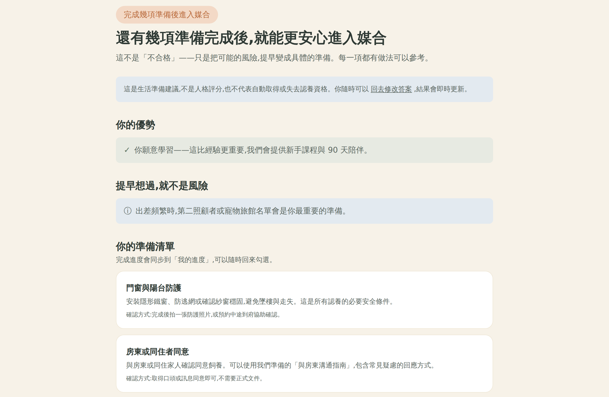
把使用者心裡的疑慮直接說破,而不是等他自己猜。四點:系統提醒不是人催、只有中途看得到、 節奏可自己調或暫停、一句話就夠。
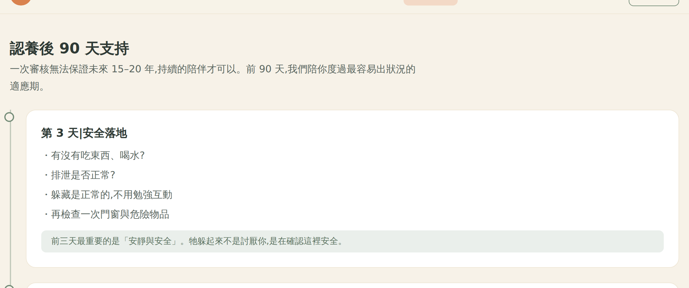
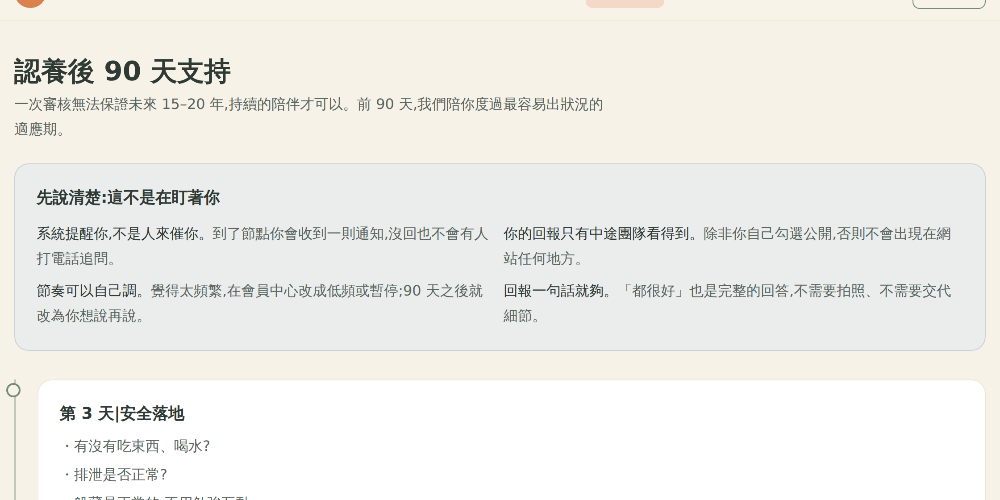
這是本次最關鍵的發現:網站要求中途完整揭露動物資訊,卻沒有讓認養人理解中途的處境。 補上這半邊,把「被審查」重新框定為「一起承擔」。
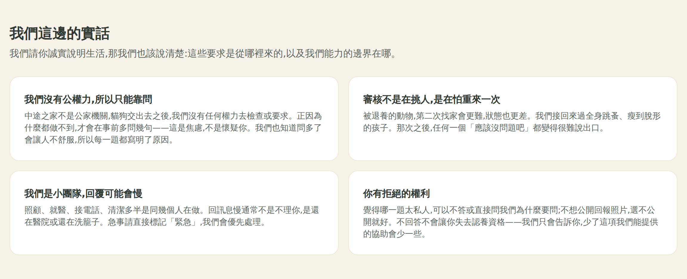
訪談顯示認養最常卡在房東與同住家人。提供可直接轉傳給第三方的說明,是能實質提高成案率的介入。
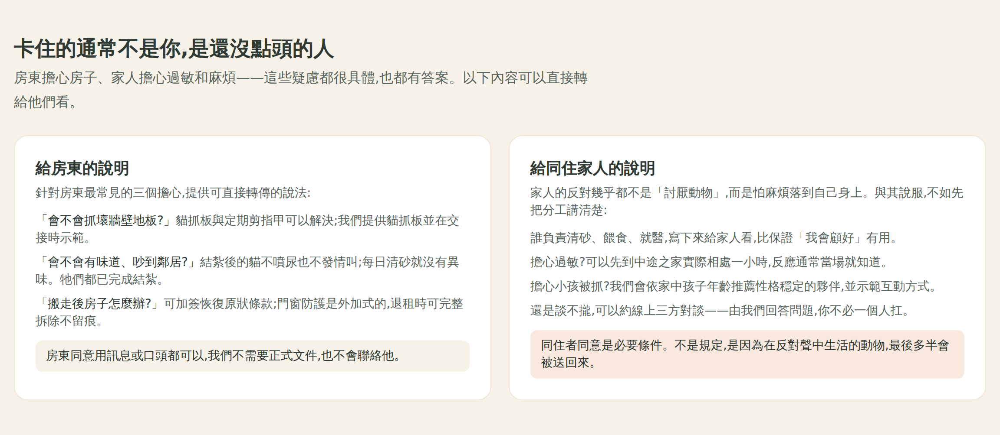
原本校準問題藏在 CTA 點擊之後,但共感型使用者在讀完故事的當下就已經決定了。 將校準移到「牠的故事」與「一起生活的真實樣貌」之間,並依動物特性動態生成。
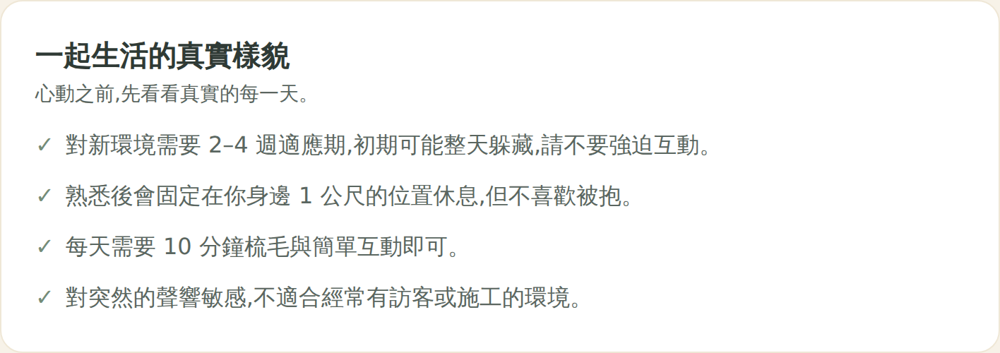
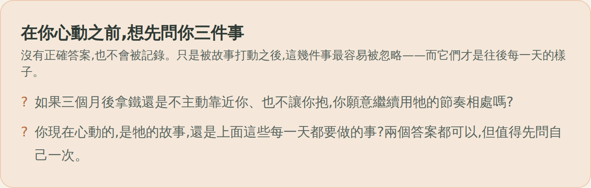
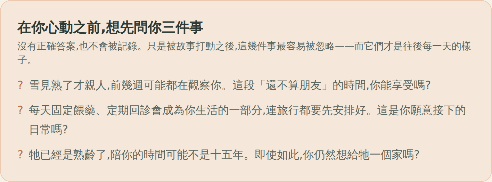
affection / activityLevel / careLevel / ageYears / mustAdoptInPair 等欄位衍生,
因此雪見(11 歲・慢性腎病)顯示的是「每天固定餵藥會成為生活的一部分」與
「陪你的時間可能不是十五年」。末題固定為「你現在心動的,是牠的故事,還是上面這些每一天都要做的事?」
這是對抗訪談中最強證據(「看到那一堆問題就不會有人填了」)的直接手段: 讓填答者不必走完 12 題才有回報。
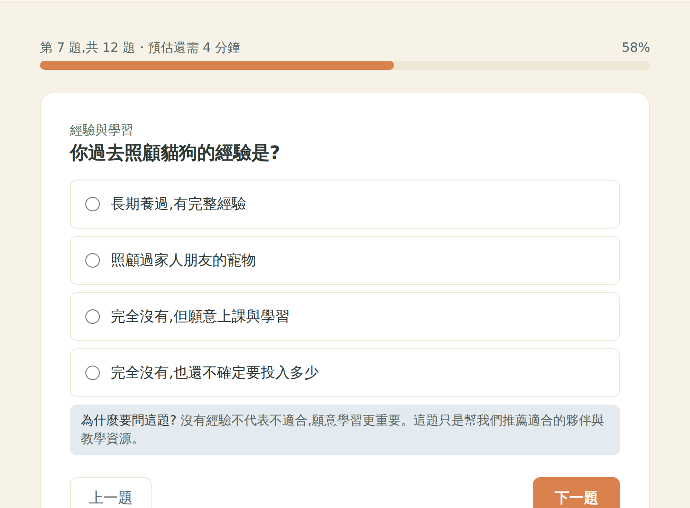
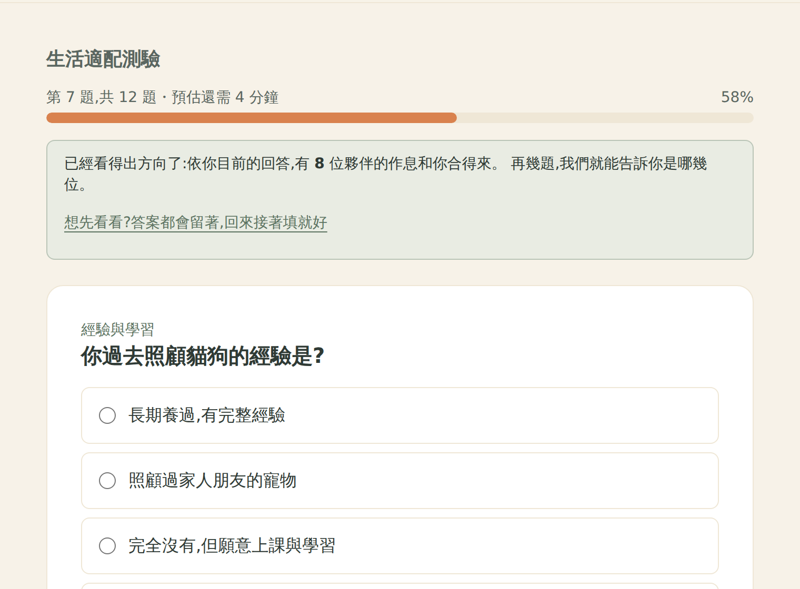
Section 元件新增 level 參數,各頁第一個區塊改用 h1。
這同時是無障礙缺陷(螢幕閱讀器失去頁面定向)與 SEO 問題。
/quiz、/process、/support-90、/crisis、
/happiness、/get-involved、/trust 共 7 頁 H1 數為 0。
修正後:12 條路由全部恰好 1 個 H1。
| 假設 | 內容 | 實測發現 |
|---|---|---|
| H8 | 久候動物仍會沉底 | 卡片沒有等待天數,探索頁沒有排序功能 |
| H9 | 支持全靠中途,無法規模化 | 訪談中最有效的支持是「我沒空,其他認養人都會幫忙回答」,網站完全沒有同儕互助 |
| H10 | 回報是純付出 | 訪談 2 的抽獎券構想未實作,回報缺乏正向回饋 |
| H11 | 合約看起來只約束認養人 | 流程頁只寫「簽署認養合約」,未說明它同時保護誰 |
| H12 | 測驗作答中畫面無 H1 | 第一輪只修了有 Section title 的頁面 |
Animal 型別新增 waitingDays。等待超過 120 天的卡片顯示等待天數,
探索頁新增「等待較久的優先」排序。刻意不使用倒數或稀缺話術——訪談 1 明確反對賣慘。
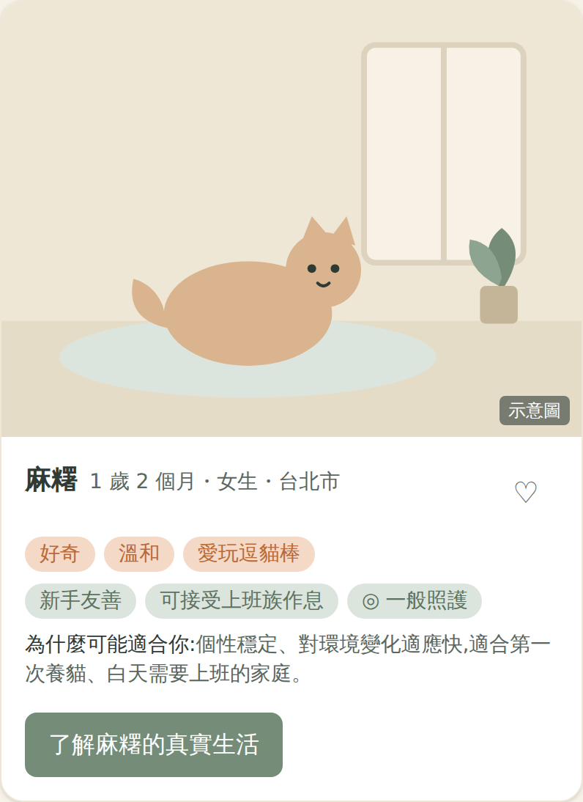
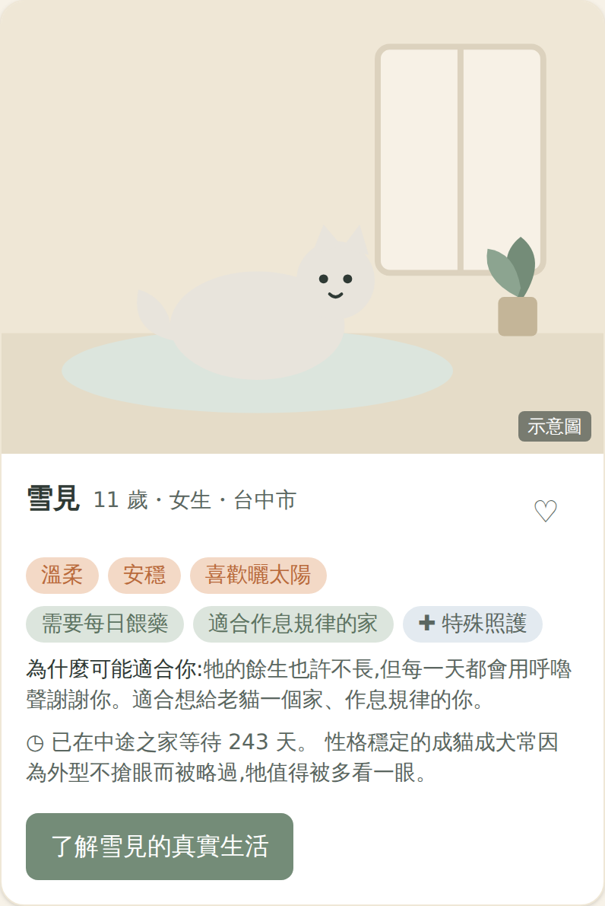
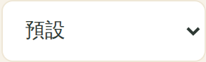
訪談 4 描述的認養人 LINE 群組是實務中最有效的支持機制——中途沒空時, 其他認養人會接手回答。這是唯一能隨規模成長的支持形式。
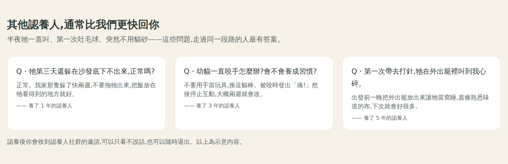
實作訪談 2 提出的抽獎券構想,但關鍵在措辭:必須明確排除「不回報會被懲罰」的暗示。
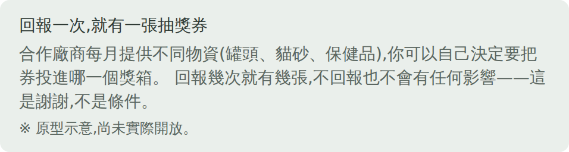
訪談 3 指出「有簽合約之後都變乖了」,但認養人視角看到的只有對自己的約束。 補上中途的對等義務,讓合約從單向枷鎖變成雙向保障。
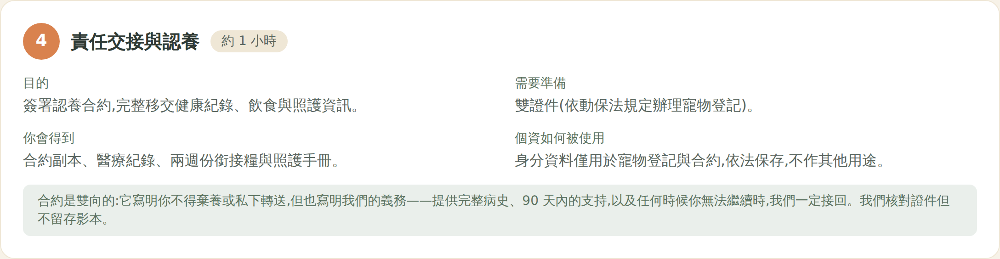
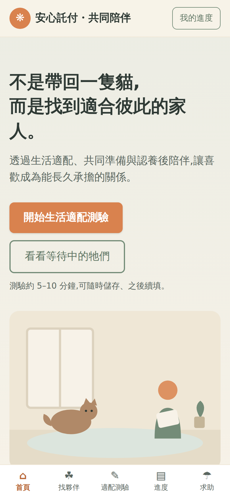
| Persona | 主要阻力 | 兩輪後的處置 | 意義 |
|---|---|---|---|
| P1 小昀 | 表單恐懼 | 第 6 題起有中途回饋,可先去看動物且答案保留 | 從「填不完就走」變成「有理由走完」 |
| P2 阿哲 | 隱私戒心 | 監視感四點 +「你有拒絕的權利」+ 回報僅中途可見 | 疑慮被主動說破,而非等他自己猜 |
| P3 宜庭 | 期待落差 | 心動當下就看到三題校準,末題直指「故事 vs 日常」 | 保留共感,但共感的是真實的牠 |
| P4 至凱 | 家人與房東 | 可直接轉傳的說明 + 三方對談 | 從「一個人去說服」變成「有工具、有人陪」 |
| P5 Wendy | 對立戒心 | 「我們這邊的實話」揭露中途的無力與界線 | 從被審查者,變成知情的共同承擔者 |
「假設我今天有 hashtag,hashtag 他會少大概 30% 的觸及率⋯如果你的文章裡面有連結, 超過兩個以上基本上可能會降到幾乎快到零⋯因為 FB 他的演算法就是這樣, 他不希望你連結到外部的網站。」 — 社團管理員
這對「做一個網站」的整體策略是結構性威脅:導流連結會被平台懲罰。 下一輪應處理可直接貼進 FB 的圖卡策略,而非依賴導流連結。
訪談中「我沒空」「我哪會記得」反覆出現。認養人端做得再好,中途端沒有省力工具就跑不動。 應包含:動物資料上架檢查表(強制填寫「可能不適合」欄位)、案件看板、求助工單依緊急程度排序。
目前寫「1–2 個工作天內回覆」,已在信任頁補上「小團隊可能會慢」的說明, 但仍需與實際人力對齊,避免過度承諾造成二次失望。
訪談 3 提到發布認養人黑名單後遭對方親友圍剿並揚言提告,律師建議停止發布。 網站已承諾不建立公開羞辱式黑名單,但內部風險註記的法遵設計仍待處理。
本次為情境模擬。正式版建議以第 6 題完成率、測驗完成率、預約轉換率、90 天回報率 做實際 A/B 驗證,特別是 R1-6(測驗中途回饋)與 R2-2(久候動物排序)兩項。
可重現性
測試腳本:adoption-website/ux-test/round1-probe.mjs、round2-probe.mjs、
round2-verify.mjs、capture-shots.mjs。
優化前版本為 commit 2bc54d9,優化後為 e4dac64。
所有截圖由 capture-shots.mjs 於兩個並行服務的建置版本上自動擷取,未經修圖。
網站中所有信任數字、捐款流向與幸福回報時間軸皆標註為示意資料,未假造任何真實認養成效。